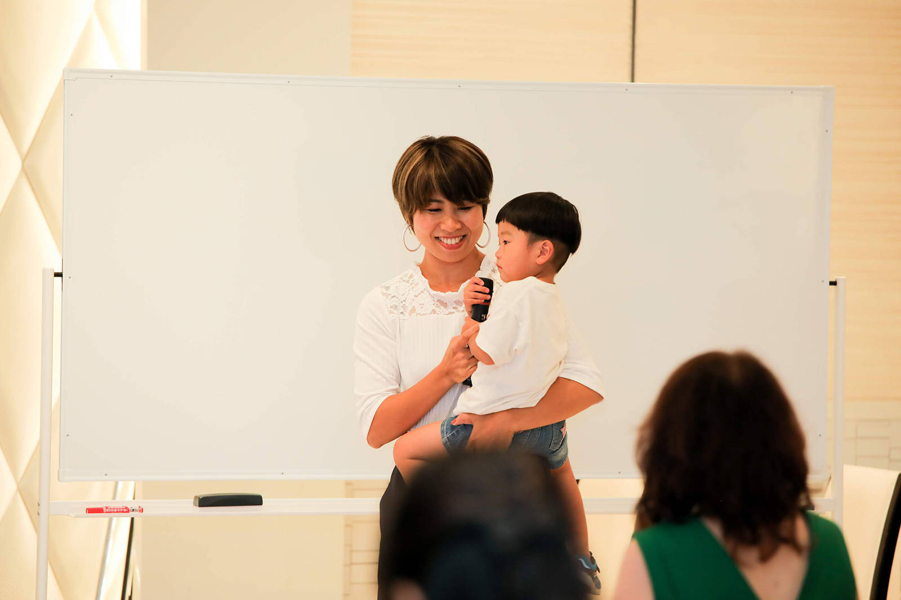
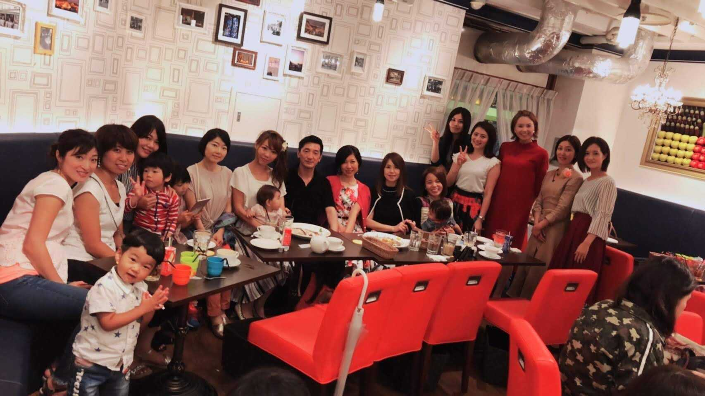

| なぜ、ふつうの主婦が「在宅で月商７桁」稼げるのか？ 〜幸せを引き寄せるママ起業の成功法則〜 | |
| 上岡香 | |
| Hitotsuku Publication (2019) | |
あなたは「起業」と聞くと、どんな風に思われますか？ 多くの方、特に私のような子育て中の主婦の方などは、自分には関係ないことだと思っているのではないでしょうか。
最近はスマホやパソコンを活用して起業する人が増えているようですが、実は私も少し前までは関心がありませんでした。「起業」は立派なキャリアや資格などを持っている「スゴい人」がやることだと思っていました。
ところがそんな私が今、起業家となって在宅でビジネスをして、月商７桁をコンスタントに稼いでいます！ 子育てとパートに忙しいごく普通の主婦だった私が、短期間でこんなに変われるなんて、夢にも思っていませんでしたが......。
やってみてわかったことですが、起業して在宅でビジネスをするのは、子育て中の主婦にピッタリの、とてもおすすめの働き方なんです。しかも、パートではとても稼げない収入を得られる可能性も。
これから、これまで私がたどってきた起業で成功するまでの道のりをお話ししていこうと思います。普通の主婦にもできることをぜひ、知ってほしいと思っています。少しでも興味を感じた方は、第１章から読んでみてくださいね！
はじめまして！ 上岡香と申します。これから「普通の主婦」だった私が、起業して月商７桁を達成できるようになるまでのお話 をしたいと思っています。まず第１章では、育児や家事に追われながらパートで働いていた私が、起業を決意するまでの背景や葛藤、起業を決意したきっかけなどについてお話ししていきますね！
私はこれといったキャリアもない、資格なども全く持たないごく普通の主婦でした。最終学歴は高卒です。高校卒業後は、フリーターとして働いて結婚、出産。２人目が生まれるまでの２年間は、専業主婦をしていました。それからは子どもを預けてパートに出る、といった典型的な「普通の主婦」の生活をずっとしていました。
いわゆる「キャリア」に関しても何の取り柄もなくて、運転免許すら持ってない。履歴書に書けるような資格なんて何もありません。高校を卒業してからはフリーターだったので、就職活動や社会人経験すらありませんでした。
そんな何にもない、ないないづくしの普通の主婦だった私でも、ビジネスをきちんと学んだことで、月商７桁を毎月しっかり稼げるまでに変われた！ ということを今からお伝えしたいと思っています。
何もないから始められない、と思っている方に
「そんなことないんだよ！」
ということをお伝えできたらいいな、と思っています。
私がなぜ起業を目指そうと思ったのか？ というと、育児とパートの両立に悩んでいた
ことがひとつの大きなきっかけでした。私には現在、小学校１年の７歳の長女、年中さんの５歳の長男と幼稚園に入るひとつ前の学年の３歳の次男という、３人の子どもがいます。
末っ子の３歳の次男には喘息（ぜんそく）の持病があって、発作を起こしたり、風邪をひいたりすると、けっこう長期間休んでしまうことが多くなっていました。
時給９００円台のパートをしていたのですが、パートにも月の半分出勤できなかったりすることがよくあったので、シフトをかなり減らされたり、もう来なくていいです、とクビになってしまったりすることをくり返していました。
そんな状況を抱えていたので、なんとか仕事のスタイルを変えられないか、在宅で仕事ができるようになったらいいなあ
、とずっと思っていました。
家で仕事ができれば、子どもの具合が悪くなったからとバタバタ、イライラせずに看病しながら仕事ができますよね。子どものためにも、私自身が無理なく働くためにも、在宅で仕事をしてお金を稼げたらいいのになあ、と漠然とでしたが、ずっと思っていました。
ただ、そう思ってはみても、資格もない、ビジネス経験もない。在宅でお金を稼ぐには、何をしたらいいんだろう。
何からどう始めたらいいのかもわからなければ、私自身、何がわからないのかすら分かってないような状況だったので、ただ思っているだけで何もできずにいる、という状態がずっと続いていました。
私が起業したいと思った理由をもう少し、くわしくお話ししますね。起業への思いを強く持った理由は、ただ子どもが病気をした場合のことを考えたからではありません。
「何とかしたい！」
と思っていたことがいくつかあって、すべて解決して夢を叶えるには、起業するしかない
、という結論に至ったんです。
子どもたちといつも一緒にいる母親として、しょっちゅう感じるのは
「子育てにはお金がかかるなあ」
ということです。
子どもが好きなキャラクターのグッズや服をねだられても、百均で買ったり、似たようなものを買ったりして、安く済ませていました。
そして、お友だちが習い事をするようになると、自分も習い事をしたい！ と言い始めるんですよね。習い事の体験は無料でできるけど、行かせてその気になったら困るので、
「また今度ね」
と言ってあきらめてくれるのを待つしかありません。
子どもも大きくなって意志や好みがはっきりしてくると、欲しいものや、やりたいことを主張してくるようになりますよね。親として、できるだけ希望を叶えてあげたいと思っても、お金がかかるから、今の我が家の収入では無理だから、とあきらめさせなければいけないという状況がとても残念でした。
いろいろお金がかかる。しかも子どもは３人いる。もっと大きくなったら高校、大学への進学費用や、塾に通うお金もかかるようになる。考えるだけで恐ろしくなってしまいます。
お金がないからと子どもの希望を叶えてやれなかったら......。そんな状況はなんとか避けたいと、漠然とですがずっと思っていました。
残念なのは、子育てのことばかりではありませんでした。たまには家と保育園、職場の往復から開放されて、家族旅行でリフレッシュしたい。そんなときも予算に限りがあるから、自分の希望を入れる余裕がありません。
まず予算内で行けそうなプラン探しをして、行けそうなところを選んで旅行することになります。行きたいと思うところに行って、ちょっと高級なホテルに泊まるような旅行もできません。
そんな我が家の事情を考えていると、思い出すのが自分の子ども時代です。私の両親は共働きでした。父親がギャンブルとお酒が大好きな人で、お金をかなり浪費してしまうため、母も働かなければ家計が成り立たなかったんです。子どもなりにそんな状況はわかっていました。
だから、私は子ども時代をいわゆる「カギっ子」として過ごしました。母の職場に併設されている保育園に入っていた弟と母が帰ってくるまで、１人で家で待つのは淋しかったですね。
弟が小学生になると母の帰りを２人で待つようになって、多少淋しさはまぎれるようになったものの、仕事から帰ってきた母にその日の出来事なんかをあれこれ聞いてもらいたいのに、夕飯作りなど家事に大忙しの母には十分相手をしてもらえないところがあって、悲しい思いをしていました。今となれば、母の忙しさもよく理解できるし、仕方なかったとは思います。
特に修学旅行の帰りなどの場合には、みんなはお母さんが迎えに来て重いリュックを持ってくれたり、お土産をその場で渡して話を聞いてもらったりしていて、とてもうらやましかったですね。私は小学校から30
分もかかる家までの道のりを、１人でトボトボ帰るしかありませんでした。
こんな自分の淋しい経験から、私は結婚したら絶対に専業主婦になって子どもに淋しい思いをさせないようにしたいと思っていましたが、実際には経済的な事情でこれまで実現できていませんでした。
両親が共働きしていても、父がギャンブルやお酒にかなりお金を使っていたようで、とても貧乏な暮らしぶりでした。３歳から中学３年生まで住んでいた家は、かなりオンボロなアパートでした。
お風呂もちゃんとしたものではなく、電話ボックスみたいな簡易的なものがあるだけ。６畳と８畳の和室２部屋に家族４人で住んでいて、圧迫感があるから仕切りのふすまを閉めることもあまりありませんでした。
家族４人がいつも一緒という感じで楽しいこともなくはなかったけれど、思春期になると、やっぱり自分１人になれる個室が欲しかったですね。家で１人になれる空間は２段ベッドの上段だけしかなかったのも、イヤでたまりませんでした。どうしても独りになりたいときは外に出たりしていましたね。
我が家も部屋は３つしかないので、３人の子どもに個室を与えようとすると、夫婦の部屋がなくなってしまうことになります。今のままでは３人の子どもたちにも、私と同じ思いをさせてしまうことになります。子どもがもう少し大きくなったら、４ＬＤＫに住めるようにしたい。自分みたいな思いをさせることを、なんとか避けたいという思いは強まるばかりでした。
でも学歴も資格も、キャリアや人脈も、何もない「普通の主婦」の私が、それを避けるためにはいったいどうすればいいのか。その頃はまったくわかりませんでした。
在宅で子どもに淋しい思いをさせずに十分な収入を得て、３人の子どもたちにそれぞれ子供部屋を与えられる家に住んで、思うままに旅行やレジャーを楽しみたいという夢を叶えるにはどうしたらいいんだろう。
日々そんな思いを抱きながらも、何もできないままズルズルとパート、家事、育児に追われて、何も変えることができないまま過ごしていました。いったい何をどうしたらいいのか、まるでわからなかったからです。
子どもとゆっくり楽しく過ごせる時間が欲しい。子どもに買いたいものを買ってあげたり、やりたい習い事をさせてあげたい。
ただ思うだけで何もできずに、時給９００円台のパートをしながら家と保育園、職場をダッシュで行き来していた私。ここからは、そんな状況から月収７桁を達成できたきっかけのお話をしましょう。
パート先への通勤には電車を使っていましたが、通勤時間は私にとって１人になれる唯一の貴重な時間でした。たとえ満員電車で周りの人たちと密着していても、誰にも邪魔されずに１人で自由に自分の好きなことができる天国のような、大好きな時間でした。
とはいえ、ラッシュで満員の電車の中でできることは限られています。私が電車の中でしていたことといえば、主にスマホをいじることでした。みなさんと同じかも知れませんね。
スマホではラインの返信をしたりもしていましたが、いちばんよくしていたのはＳＮＳを見ること。友達のＳＮＳを見てコメントしたり、「いいね！」したりするのを楽しみにしていました。
ある日、いつものように通勤電車でＳＮＳを見ていたら、友だちの１人がある起業家さんのＳＮＳに「いいね！」をしているのが目に留まりました。正直なところ、その友達が「起業家」なんていうタイプの人に興味を持っているとは思ってもいなかったし、「起業」に興味をもつようなタイプの友達は周囲にいなかったので、かなり意外性を感じたんですね。
そういう私も、「起業」に興味を持たないタイプの人でした。言葉は知っていたものの、社会で経験を積んだ才能にあふれるエリートな人が、自分でビジネスを始めるんだろうな、と思っていました。だから、当然自分には関係ない世界だ、と思いこんでいました。
彼女が「いいね！」したブログ、いったいどんなことが書かれてるんだろう。自分の友達が関心を持っているということは、私でも興味を持てるようなブログかも知れない。ちょっと興味を引かれて読んでみました。そこには私とプロフィールもたいして違わないような、ごく普通の子育て中の主婦だった人が、起業して成功したことが書かれていました。
私と同じようにキャリアや資格、資金や人脈もなく、特に知識もない普通の子育て中の専業主婦だったけれど、起業して成功、１８０度生活が変わった
そうです。そんなことってあるのかしら......。
読み進めてみると、現在の彼女の生活は在宅で仕事をしていて、収入もパートに行くよりずっと稼げているようです。それは、まさに私が理想としている生活
でした。
「この人にできたなら、この人がやったとおりにしてみれば、もしかして私も起業して成功できるかもしれない」
それなら自分にもチャンスがあるということ？ 今まで思いこんでいたように、これといった能力や経験がなくても成功できる人がいることを知って、目の前が開けたような思いでした。
それまでは在宅で思うように稼ぐにはどうしたらいいのか、まるでわからなかった私にとって、彼女のブログは貴重な情報源になりました。その後は毎日の通勤電車のなかで、彼女のブログを読んだり、他の起業家さんのブログも読んだりするのが日課になり、それまでまるで関心がなかった「起業」ということにどんどん関心を深め、情報を集めるようになりました。
ただ、こんなヒントがたくさんもらえる場を知ってからも、しばらくは相変わらず何ひとつ行動に移さずに、これまでと同じく、保育所と家と職場をダッシュで往復する日々を繰り返していました。まさか自分にできるわけがない、という先入観はなかなかぬぐえなかったんだと思います。
在宅で仕事ができたらいいなあ、そしていろんな夢や希望を叶えたいなあと思っていた私。起業した主婦のＳＮＳを知り、自分にもできるかも、やってみたいと思いながら、やっぱり何もできずにいた私がついに動き始めることを決心するに至ったのは、ある出来事があったからでした。
このショッキングな出来事がなければ、私は今だに起業にチャレンジしていなかったかも知れません。ことの発端は３年前に、私の母にガンが見つかったことでした。
ガンが見つかったときにはもう既に末期で、すぐに手術しなければ、という状況でした。余命は２、３年くらいとも宣告されて、私はかなりショックを受けました。
でも母はとても前向きでした。私はちょうど３人目の子どもの妊娠中だったんですが、その子の顔も見たいし育児も手伝ってあげたいからね、と言ってすぐに手術して、手術後のつらい抗がん剤治療にもひるまずに臨んでいました。
そんなたいへんな状況の中でも、母は私と子どもたちのことを気遣い、心配してくれたのでした。子どもが病気をして、病児保育が満室だったら、私がパートを休まずに済むように預かってくれたり、あれこれとかなり育児の手助けもしてもらっていました。
それだけでなく、折に触れて子どもが欲しがる新しい服を買ってくれたりもしていました。私が結婚して子どもを持ってからは、しょっちゅう
「お金が足りない」
と私がぼやくのを聞いていましたし、子どもの服はお下がりをもらったりして、洋服代も節約しているのをよく知っていたのでしょう。母はガンと闘いながらも、自分がいなくなったらそんな援助があまりできなくなってしまうね、と私たち親子のことを心配してくれたのです。
私たちを外食にも連れて行ってくれることもよくありました。自分がいなくなったら、そんな今までしてくれていた、いろいろな形での援助ができなくなってしまうことが、とても心配なようでした。
その後しばらくたって、２０１７年の年末、追い打ちをかけるように悲しい知らせを受けることになりました。病院に呼び出されて、母の余命があと３ヶ月程度だという宣告を受けたのです。
悲しみに打ちひしがれながらも私は、このまま母が自分亡き後の私たちを心配したまま旅立たせるわけにはいかない！ と固く決心しました。もう、いつまでも立ち止まっているわけにはいきません。
３ヶ月で結果を出すのは難しいかもしれないけど、３ヶ月以上生きられるかも知れないし......。とにかくいつもお金が足りない！ 子どもが病気になった！ と言って母に心配をかけないで済むように、自立したところを母に見せてあげたい。
今までどおりパートをしているだけじゃ、私の理想に近づくのは難しい。ビジネスを始めて、せめて土台作りだけでもできたところを母に見せるんだ！
そして母に援助してもらわなくても私、もう大丈夫だよ！ と言えるようになって、母を安心させるんだ！ 少しでも早く、動き始めなきゃ！ そんな思いにつき動かされて、私はやっと１歩、踏み出すことを決心できたのでした。

末期ガンを宣告された母を少しでも早く安心させようと、ついに自立して夢を叶えるべく、動き始めることを決意した私。第２章では、そんな私が実際に起業して仕事を始めるためにやってきたことを、具体的にお話ししていきますね。
余命宣告をされた母に自立できたところを見せて、一刻も早く安心してほしい。「ママ、ママ！」と自分をいちばん必要としてくれる子どもが小さい時期に、できるだけ一緒にいられる時間を作って、淋しい思いをさせないようにしたい。
子どもが病気になっても、あたふたと病児保育に問い合わせたり、職場や母に迷惑をかけたりしないで収入を得られるようになりたい。
ゆとりのある生活をして、思い通りに旅行やレジャーを楽しめるようになりたい。欲しがるものを買ってやりたい。
そんな夢を叶えるために、動き出すことを決意したはずの私。でも実際は、その後もまだ、少し決心がつかずにモタモタしていました。
ただ電話して、問い合わせてみるというだけのことなのに、まだ覚悟が足りなかったようなところもあって、なんだか電話するのが怖い。私みたいな普通の主婦が電話しても相手にされないんじゃないか。電話するだけの勇気がなかなか出なかったことを覚えています。
何から始めればいいのかも、どんな順序でやっていけばいいのかもわからない。だから問い合わせてみるしかないんだ！ 母を安心させて、子どもたちに私と同じ思いをさせないために、少しでも早く動かなければ！ 迷いを振り切って数日後、ついに問い合わせることができました。
問い合わせてみると、まずは話を聞く、というより私の話をとてもよく聞いてくれたのでした。現在の私の状況や生活スタイル、「なりたい私」は？ といったことをじっくりと聞いてもらうことから、私の活動は始まりました。
「『なりたい私』があるなら、一緒にがんばりましょう！」
と言っていただいたのも、とてもうれしかったですね。今まで誰にも相談できず、１人で不安や悩みを抱えていたので、理解者ができたことが本当に心強く感じられました。そして、私にも成功する可能性はあるんだ、ということにもやっと実感を持てるようになりました。
「ただ思っているだけでは、夢は絶対に叶えられない」
電話を終えて、そう言われたことが胸に蘇ってきました。そう、電話をかけただけで満足して、このまま何もせずに過ごしてしまったら、何ひとつ変わらない。私はすぐにビジネスの勉強を始める決意をしました。
問い合わせをして私の現状や希望などの話を聞いてもらった後、学ぶべきことを教えてもらい、いざビジネスを学ぶことをスタートすることに。そこで気づいたのが、学ぶ時間が必要になるということ。
これまでお話ししてきたことからおわかりかも知れませんが、私はお金と同じく、時間のゆとりもまるでない生活をしていました。子どもたちを小学校に送り出し、保育園に預けたら、午前中は母と病室でできるだけ過ごして、必要な世話をしていました。母と過ごす時間も少しでも長くしたかったし、できる限りのサポートをしたいと思っていました。
午後からはパートへ。パートが終わったら急いで保育園にお迎えに行って、帰宅したら夕食作りなど家事に追われる。あっという間に１日が終わってしまいます。まとまった勉強のための時間なんて、まったく取れそうもありません。
でも、ビジネスをやっていくためには学ぶことは欠かせないことは、相談してお話を聞いた時よく理解できたので、なんとか時間を見つけるしかありません。そこで私はあらゆるスキマ時間を活用、できる限り「ながら勉強」をすることで、ビジネスの勉強のための時間を確保することにしました。
ＳＮＳを見ていた通勤時間も勉強の時間に。仕事中トイレに行くときに、スマホを見てちょっとしたことを覚える。料理中、洗濯物を干すとき、寝かしつけのときには音声を聞いたり、どういうことをやっていきたいのか、伝えたいのかなど、ビジネスのことをあれこれ考えてみたり。自分がやりたいことのためだから、ポジティブにがんばれたし、そうやって覚えたことはよく頭に入ってくれました。
このとき思ったのは、「時間は作るもの」
ということです。時間に余裕ができたら、なんて思っていたら、いったいいつのことになるやら。私も勉強に使える時間なんてない、と一瞬あせりましたが、やる気になれば案外何とかなるもの。やっぱりまずはやってみることが大切なんだと思い知りました。やらなければ、何も変わらないのです。
夫には私が起業しようとしていることを伝えないでいました。何となく、夫は起業には賛成しないだろうと察していたから、ある程度軌道に乗ってから伝えたかったんです。
でも、パソコンで何かしていることが増えたり、音声を聞いていたりするようになったのですから、そのうち気づかれて、
「いったい何やってるの？」
と言われてしまいました。
いつまでも黙っているわけにも行かないので、意を決して起業してビジネスを始めようとしていることを正直に話すと、案の定、ビジネスで成功するなんて夢物語だ。うまくいくはずないからすぐにやめてほしい。今までどおり堅実に、パートで決まった時給をもらって働くほうがいいに決まってる、と言われました。
これまでは夫ともめた場合、私はほとんどの場合、最終的に夫に従っていました。でも、今回ばかりは夫に逆らって、頑張って自分の想いを話してみました。「なりたい私」になって家族ともっとハッピーに暮らしていくために、ここで折れてしまうわけにはいきません。本格的にビジネスを始めるには、夫の理解も必要になってきます。なんとか理解してもらって、応援してもらいたいと説得できるように頑張りました。
これから３人の子どもにどんどんお金がかかるようになっていく。３人分の習い事や塾、進学の費用、そして子供部屋のことなどを考えると、私がパートをしているだけでは収入が足りなくなる。もう少し大きくなったら、３人に個室を与えてやりたいけど、現状ではできない。
旅行に行くのだって、行けるところに格安旅行するんじゃなくて、行きたい所に行けるようにもっと収入を得たい。家族みんなで「ゆとり」のある生活ができるように、起業してがんばりたい
、と主張し続けました。
２０１８年の２月に始めて、夫と話し合ったのが３月。スタートして１ヶ月たった頃でした。いつもとは違う、私の起業に挑戦してみたいと言い続ける様子を見て、熱意や本気度を感じてくれたのか、最終的に夫はいくつかの条件を出して、チャレンジしてもいいけど、出された条件がクリアできなければ起業はあきらめてパートを続けていくように、ということでしばらく様子を見てくれることになりました。
夫に出された条件は２つ。これまで私はパートで月５～８万円ぐらいの収入を得ていたので、２０１８年中に月々７万円ぐらいの収入が得られるようにならなければ、起業してビジネスをするのをあきらめること、というのが１つめ。
もう１つは、起業したからといって家事をおろそかにしない、ということでした。起業するまでも、特に家事を完璧にやるようなタイプではありませんでしたが、これまで通りのレベルの家事はきちんとやるように、ということです。
この２つができないようなら起業はスッパリやめて、パート生活に戻ることを約束しました。私はやる気に燃えていた時期でもあり、大丈夫、どちらの条件もクリアしてみせる！ そして夫に新しい生き方を認めてもらうんだ！ と決意をより固めていきました。

この章では、起業して実際にビジネスを始めてからのことをお話ししていきます。想像していなかったくらいうまくスタートをきれた私ですが、ときにはスランプもありました。どんなふうに乗り越えたかをお話ししていきましょう。
ビジネスの勉強を始めて少したった頃に、私が学んでいた先生にあたる人が、認定講師の募集をしているのを見かけました。これまで数ヶ月勉強してきた成果を試してみたくて思い切って応募したら、講師になれることに。
その後、認定講師としてやっていくための周知や集客、募集の仕方などを勉強させてもらって、認定講師になれました。そうして、ついに講師としてデビューする日を迎えることができました。
申し込み開始日には、
「私なんかの講座に申し込みがあるのかなあ......」
もう不安で、ドキドキが止まりませんでした。ところがいざ受け付けを開始してみると、３分で満席になったんです！
信じられないくらいうれしい状況にとても感動しました。申し込んでくれた人に感謝の気持ちを忘れずに、お役に立てるように精一杯講師として頑張ろう！ 決意も新たに順調なデビューを喜び、気合を入れ直して私のビジネスはスタートしました。
その後も申し込みを開始するとすぐに満席になったり、増席をしたり、増席をしてもまたすぐ満席になったりといううれしい状況が続いて、少しずつ自分に自信が持てるようになっていきました。
自分に自信が持てるようになったことで、講師としてもうまくお話しして、伝えたいことをしっかり伝えられるようにもなったようで、いろんなことがどんどんいい方向に向かい始めたと思います。
こうして自宅でビジネスができるようになって、子どもと過ごす時間を増やすことができるようになりました。長女は小学１年生なので、けっこう早く学校から帰ってきます。帰宅すると私が家にいるのがうれしいようで、
「一緒におやつ食べようよ」
とお茶を入れてくれたりするようになりました。学童保育に入れたりせずに、母親を必要としている時期を一緒に過ごせるようになって、起業して本当によかったと思いました。
また、末っ子が体調を崩してもあわてて預け先を探す必要もなくなって、心に余裕を持って子どもたちと接するようになれました。自分が体調を崩すと母親があわて始めるというのは、子どもにとっても心地よい状況ではなかったはず。そんな状況を変えられたことも本当に嬉しくて、ホッとした気分でした。
パート先の人に突然休んで迷惑をかける心配もなくなり、いつもアタフタ、イライラしていた自分からも抜け出すことができました。
こうして在宅でビジネスができると叶うだろうと思っていたことが、本当に次々と叶っていきました。あの日、勇気を出して問い合わせをして本当によかった！
と思っています。
ビジネスはその後も順調で、収入の方もなんと、月商７桁を達成できるまでになっていきました！
まさかここまで成功できるとはまったく想像もしていなかったので、我ながら驚き、というのが正直なところです。
お金に余裕ができたことで、これまでできないとあきらめていたことも無理なく実現できそうで、ワクワクしています。
認定講師として恵まれたスタートを切ることができ、収入も期待以上に得られるようになった私ですが、何もかもうまく行ったというわけではありませんでした。セミナーを開催しても人が集まらなかったり、無料のお茶会をしても申し込みが伸びなかったりすることもありました。
どうして？ 自分ではその時、理由がわからなくてヘコんでしまったのですが、成功している人に相談してみると、やり方に問題があることや改善点を指摘してくれて、どうしたらいいか教えてもらえました。私はビジネスを始めてわりとすぐに軌道に乗ったので、ただ募集すれば応募があって当たり前、申し込みを開始すれば満席になるものだと思いこんでしまっていたようです。
指摘してもらった点を改善してやり方を修正してみたら、申し込みが増えてホッとしました。たぶん、自分１人で考えていたら気づくことができず、スランプを脱出できないままで終わっていたかも知れません。
スランプがあってもそこから立ち直れて、一発屋で終わらないで在宅ビジネスを続けていられるのは、こんなスランプのとき、相談できる人がいたおかげ
だと確信しています。
ビジネスを始めるまでは自分の弱点と思い込んでいた、知識や経験が何もないということは、実は強みになることが、実際に起業してみるとわかりました。「何もない」からこそ、教わったままを素直に実行してこれたのだと思います。
さまざまなキャリアや他のビジネス経験があればそれを活かそうと、教わったことをアレンジしてみようと思うこともよくあるのではないでしょうか。私の場合、そういう経験や知識を何も持っていなかったので、教わったことをただひたすらそのままやってみました。
教わったことをひたすらインプットして、それを素直にアウトプットしてみたら成功できたという感じでした。結局はそれが成功につながったのではないかと思っています。
知識や経験がないから素直に教えてもらったとおりにやる、ということで知識や経験のなさは強みにできます。私がそうだったように、キャリアや資格など何もない普通の主婦にも、素直にひたむきに学べば、成功できる可能性はじゅうぶんあるんです！
私のセミナーやお茶会に参加してくださった方からメッセージをいただいたり、アンケートに答えていただいて、感想やご意見を聞く機会があります。そこに、私のセミナーに参加してからサロンの申し込みを増やすことができたと書いていただいていることもあったりして、お役に立てたのだと思うととてもうれしくなります。
実際にお会いしてお話をしているとわかるのですが、ビジネスが成功し始めると、皆さん見た目もイキイキし始めるんですね。声や雰囲気もキラキラし始めて、ハッピーになれたんだな！ ということが伝わってくるんです。
皆さんのうれしい変化を感じられるのが、仕事のやりがいになっています。みなさんがキラキラした人になれるお手伝いができるのは、とても光栄なことだと思っています。
そんな体験から気づいたのが、私は誰かに喜んでもらえる仕事が大好きで、とても生きがいを感じられるんだ！ ということです。人に喜んでもらえて、子どもたちも喜んでいる。そして収入も期待以上に得られていますから、この仕事に出会えたことを心からうれしく思っています！
ここまで私のこれまでの日常や起業を考えたきっかけ、ビジネスをスタートするまでの道のり、そして起業家として成功するまでのお話をさせていただきました。私と同じようなごく普通の主婦の方で、同じように始めてみたいけど、最初の一歩が踏み出せないでいる方も多いのではないでしょうか。
そこで実際に、何もないごく普通の子育て中の主婦である私が、起業して成功できたことを振り返って、成功するためのコツや、やるべきことなどをこれからお話ししていこうと思います。
お読みいただいておわかりかと思いますが、何よりたいへんでいちばん手間取ったのが、一歩踏み出す、「始める」ことでした。
「普通の主婦が起業して成功するなんて夢物語」
と夫にも言われましたが、世間一般でもそう思っている人がほとんどですよね。私自身も、問い合わせてみるまではそんなふうに思い込んでいたのですから。
成功できるのはすごく頭がよかったり、たくさんの社会経験があったりする、立派な学歴やキャリアがある人だけに決まっている。実際、私もそう固く信じ込んでいたから、なかなかスタートを切ることができなかったわけです。
だから私の話を読んで、普通の主婦だって起業して成功できることをまず知ってほしいと思っています。パートで働くより子どもとの時間を多く持てて、預け先にも困らない。
子どもが病気をしてもあわてる必要もなく、職場の人に迷惑をかける心配もない。そのうえ、努力次第でパートよりずっと稼げる可能性があります。自由でゆとりのある生活が手に入る可能性があるんです。
何もしないで成功を手に入れることはできません。大事なのは、とにかく「始めること」
なんです。時間ができたら、余裕ができたら、と思っていると、結局何もやらないまま時がどんどん過ぎてしまいますよ！ 思い立った時がチャンスです！
起業してビジネスをするために、誰かに頼らなくてもできるんじゃないか。自分で勉強してやればいいんじゃないか、と考えている人もいるでしょう。確かにそれも不可能ではないでしょう。
特にキャリアやビジネス経験がある方なら、そう考えるかもしれません。起業に関する本もたくさん出ているし、インターネットでいろいろ調べることもできますよね。でも実際のところ、さまざまな情報があふれすぎていて、始めようとしているビジネスに最適な方法などを取捨選択するのがとても難しいんです。方法を間違うと成功にはたどり着けません。
また、「当たって砕けろ」であれこれとにかく試してみる、自分流を貫いてやるんだ！ と考えている人もいるかも知れませんね。それもひとつの方法ではありますが、成功するまでに時間と費用をかなり無駄にする可能性があることは、覚悟しておかなくてはなりません。
実際にやってみると１人で考えてもわからないこと、相談したいことがたくさん出てきます。相談できる人がいない場合、いつまでも答えがわからず、悩み続けて疲れ切ってしまうようなことになるかもしれません。
「自分流」にこだわるのは自由ではありますが、成功にたどりつくまで、かなりの遠回りになるかもしれないと思います。早く結果を出して母に見せたい、まだ小さい子どもたちと少しでも多く接していたい、と焦っていた私は、自己流で挑戦したりせずに問い合わせたことで、思った以上の結果が早く出せて、本当に正解だったと思っています。
母が余命３ヶ月と宣言されたことで、やっと起業への挑戦を始めた私。母に自立したところを見せられるように頑張ろうという気持ちはとても強かった反面、何の知識も経験もない私が結果を出すには、かなりの時間がかかってしまうだろうとも感じていました。さすがに起業してビジネスで成功することが、そんなに短期でできるとは思えませんでした。
夫から出された条件も、必ずクリアしてみせる！ という決意と背中合わせに、もしダメだったら、その時点で夢をあきらめることになってしまうという焦りがかなりありました。それではこれまでとまったく変わらない生活を送り、私と似たような淋しい思いや満たされない気持ちを子どもにもさせることになる。とても残念なことです。
懸命にビジネスを学びながらも、焦りは相当なものでした。もっと早く始めておけばよかった、という後悔も感じつつ、できることを精一杯やっていました。
でも、そんな心配は取り越し苦労にすぎなかったんです。問い合わせて、学び始めてから講師としてセミナーを満席にできるまでは、驚くほど早く、順調に事が進みました。
やっぱり私、才能あったんだ！ なんて思ってはいません。これもひとえに、成功への最短ルートを教えてくれるコミュニティで学べたおかげです。
コミュニティには、これまで起業して成功してきた人たちの経験や知識、試行錯誤してたどり着いたベストな方法など、成功するためのノウハウがたっぷり蓄積されています。それを学んでそのとおりに実践することで、ムダや回り道を省いて進める最短ルートが歩めたんです！
友達のＳＮＳでこのコミュニティを知ることがなければ、こうして今、成功を手に入れることもできなかったでしょう。コミュニティとのご縁が合ったことは本当にラッキーなことでした。
繰り返しますが、何もないごく普通の主婦でも、起業して短期間で結果が出せたのは、成功した人のやり方を素直に学んで身につけ、そのとおりに実践してきたからこそでした。
私のように大慌てで結果を出そうとしなくて済むように、思い立ったらあまり考え込まずに一度、私のＬＩＮＥ＠
に問い合わせをしてみてください！ 本当に後悔先に立たずで、もっと早くから挑戦すれば、あんなに子どもを抱えて不安や困りごとに押しつぶされそうにならずに済んでいたのに！ とちょっと後悔しています。
一歩踏み出したあなたは、あっという間に「なりたい自分に」近づいていけるかもしれませんよ！ まずは気軽に問い合わせてみてくださいね！
いかがでしたか？ どこにでもいるような、何の取り柄もない普通の主婦だった私が、「なりたい自分」になるために一歩踏み出してみたら、在宅で仕事ができるようになって、予想もしていなかったほどの収入を得られるようになれたなんて、今だに夢のようでもあります。
こうして振り返ってみても、私に隠れた才能があったというわけではなく、まずはやってみよう、とチャレンジしたことが成功への第一歩でした。
「案ずるより生むが安し」と言いますがそのとおり、時間のなさなどは、動き出してみればなんとかなるものですね。やらなければ、何も変わらないのです。
そして何より、くじけずに前進して、短期間で結果が出せたのは、親身に相談に乗ってくれて、ベストなやり方をアドバイスしてくれたビジネスの仲間がいたからこそだと強く感じています。ここに深く感謝を述べておきたいと思います。
また、これまで私を支えてくれて、ビジネスにチャレンジするきっかけをくれた母や、見守ってくれた家族にもとても感謝しています。
ここまで読んでくださり、本当にありがとうございました。お話しした私の経験が少しでも役に立って、「なりたい自分」になれる方が１人でも増えることを願っています！
上岡 香
１９８３年生まれ、神奈川県出身。
現在は月商７桁が当たり前だが、高卒で明日遊ぶために働くというフリーター生活を８年間も送っていた。
当然ビジネスって何？という感じのまま26
歳で結婚し、２歳差姉弟の３人のママになる。
子供たちを保育園に預けてパートに出るが貯金もできないような生活で、時間もお金も余裕がなく、子供にイライラをぶつけてしまう。自分の母親からされて嫌だったことを繰り返していることに気づき、時間も場所も選ばず収入を上げるため起業する。知識０からのスタートでわずか３ヶ月で月商１５０万円達成。その後毎月７桁が当たり前に。０からのスタートでも本気で変わりたい人のために活動中。
タイトル なぜ、ふつうの主婦が「在宅で月商７桁」稼げるのか？ 〜幸せを引き寄せるママ起業の成功法則〜
発行日 ２０１９年１月25
日
著者 Kaori Kamioka
本書の全部あるいは一部をコピー、スキャン、デジタル化する無断複製は、著作権法上での例外である私的利用を除き禁じられています。本書を代行業者等の第三者に依頼してコピー、スキャンやデジタル化することは、たとえ個人や家庭内での利用であっても一切認められていません。
©２０１９ Kaori Kamioka